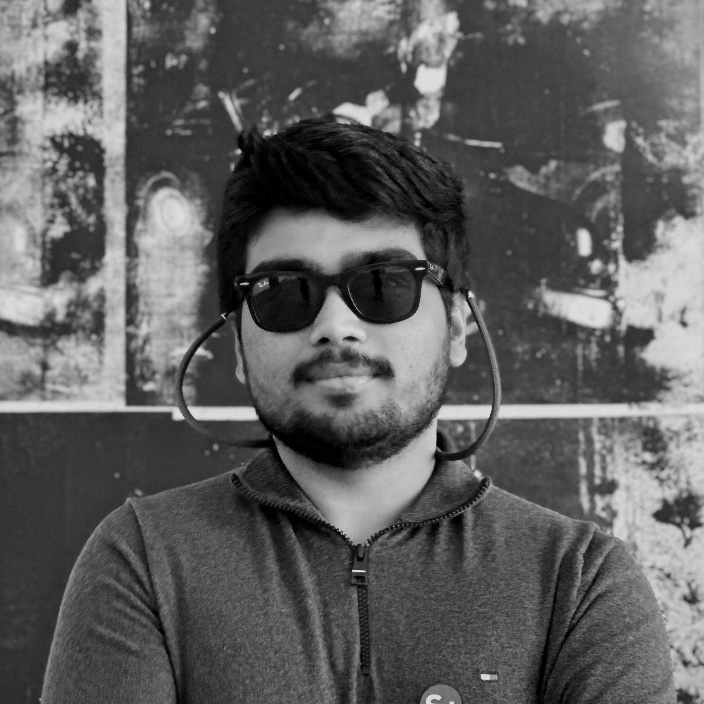

Amitabh Yadav
Ph.D. candidate at École Polytechnique Fédérale de Lausanne (EPFL)
I am a second-year Ph.D. candidate at EPFL, specializing in low-power digital/mixed-signal integrated circuit design with a focus on closed-loop neural interfaces. I received my B.Tech. degree in electronics engineering from the University of Petroleum and Energy Studies, Dehradun, India, in 2017, and the M.Sc. degree in computer engineering from Delft University of Technology, Delft, The Netherlands, in 2019. I was an Experimental Physicist in quantum computing at the Lawrence Berkeley National Laboratory, USA, and UC Berkeley, USA and later joined as a Fellow at European Organization for Nuclear Research (CERN), Geneva, Switzerland. Since 2024, I am a pursuing my doctoral degree at the Integrated Neurotechnologies Laboratory in Campus Biotech, Geneva.
In my spare time, I work on white hat hacking on networks and practice playing the piano. A wannabe music composer, I keep experimenting on the DAW whenever I find time. The progress on that front, however, has not been so impressive. I like running, bike-packing, photography, swimming and hiking - this comes alongside my hobbies as ranging from a nature lover to exploring ancient cities with intriguing historical backgrounds.
Lastly, one of my personal ambitions is to live at least till the age of 106 - this way I would be among the handful few who would have lived and experienced three centuries! Yayy!
News
| March 28, 2025 | A 32-Channel 196μW Logarithmic SoC for Brain Network Connectivity Extraction and Adaptive Psychiatric Symptom Classification is accepted at VLSI Symposium 2025 in Kyoto, Japan! |
| December 23, 2024 | MiBMI Brain-to-Text SoC is featured among top 10 research at EPFL in 2024 🡥 |
| August 01, 2024 | A 2.46mm2 Miniaturized Brain-Machine Interface (MiBMI) Enabling 31-Class Brain-to-Text Decoding 🡥 is accepted at Journal of Solid-State Circuits. |
| October 11, 2023 | MiBMI: A 192/512-Channel 2.46mm2 Miniaturized Brain-Machine Interface Chipset Enabling 31-Class Brain-to-Text Conversion through Distinctive Neural Codes 🡥 is accepted at ISSCC Conference 2024 in San Francisco, U.S.A. |